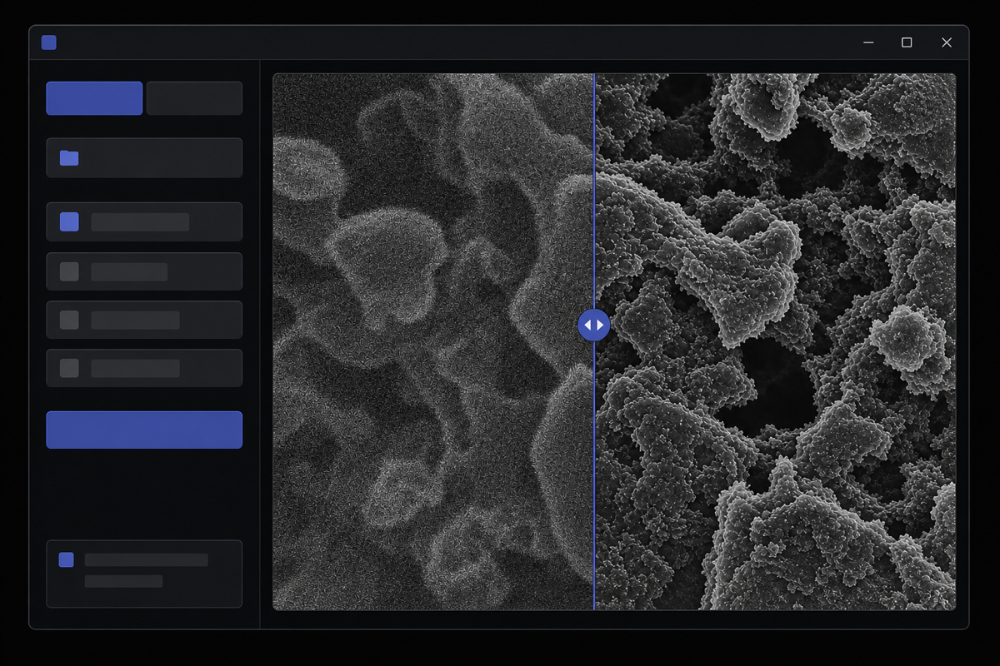

Denoiser 使用說明
給只收到已打包 release folder 或 zip 的使用者

Single /
Batch、開檔案或資料夾、選 mode、按
Restore。右側是檢查區：Single 會顯示影像 preview，
restore 後會顯示 raw / restored comparison。說明文字不壓在 preview
上，避免遮住影像。
Single：處理單張 image
操作步驟
- 確認左側 workflow 是
Single。 - 點
Open Image，選一張支援格式的 2D image。 -
選擇適合的 mode，例如
HRSTEM或HRSEM。 - 右側 raw preview 顯示正常後，按
Restore。
Restore 後看哪裡
右側會變成 raw / restored comparison。左邊是 raw image，右邊是 restored image。中間分隔線可以拖曳，也可以點擊 image 任一位置移動。
注意事項
- Single mode 沒有 cancel button。
- 處理中左側 controls 會暫時 disabled。
- 大圖可能需要數分鐘，這是正常狀況。
Batch：處理整個 folder
操作步驟
- 點左側
Batch。 - 點
Add Folder，選擇要處理的 folder。 - 選擇 denoising mode。
-
按
Restore，右側會顯示進度與每個 image file 的結果。
Batch 行為
- 只處理 selected folder 內的 files，不掃描 subfolders。
-
一般文字檔不會顯示在右側清單，例如
.txt、.csv、.json。 - 某個 file 失敗時，Batch 會繼續處理後面的 file。
Cancel
Batch 執行中會出現 Cancel。按下後，目前正在處理的
file 會先完成，接著才停止剩下的 files。
Mode 怎麼選
HRSTEM
High-resolution STEM image
輸出到
denoised_HRSTEM
LRSTEM
Low-resolution STEM image
輸出到
denoised_LRSTEM
HRSEM
High-resolution SEM image
輸出到
denoised_HRSEM
LRSEM
Low-resolution SEM image
輸出到
denoised_LRSEM
HRTEM
High-resolution TEM image
輸出到
denoised_HRTEM
LRTEM
Low-resolution TEM image
輸出到
denoised_LRTEM
如果不確定 mode，請依照你們實驗室或影像來源的判斷規則選擇。選錯 mode
不會改動 raw file，但會產生不適合該影像類型的 output。
輸出位置
Denoiser 不會覆蓋原始 raw file。Output 會存到原始 image 旁邊的
denoised_MODE subfolder。若同名 output 已存在，再次
restore 會覆蓋舊 output。
D:\caseA\wafer01.tif + HRSTEM → D:\caseA\denoised_HRSTEM\wafer01.tif D:\caseA\wafer01.jpg + HRSEM → D:\caseA\denoised_HRSEM\wafer01.jpg.tif D:\caseA\wafer01.dm3 + HRSTEM → D:\caseA\denoised_HRSTEM\wafer01.dm3.tif
狀態與限制
Restored
已成功產生 output。
Skipped
檔案格式或內容不在第一版支援範圍內。
Failed
該 file 處理失敗；Batch 會繼續處理其他 files。
Cancelled
Batch 被取消，這個 file 沒有處理。
支援 input：
.tif、.tiff、.png、
.jpg、.jpeg、.dm3、.dm4。
第一版只支援 single 2D image，不支援 multi-page TIFF、stack-like
data、zoom、pan、crop、rotate、brightness 或 contrast adjustment。